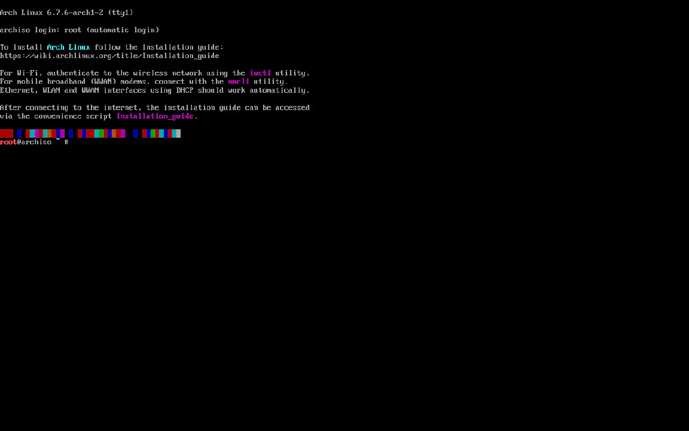

Arch Linux Setup
Learn how to set up Arch Linux on your system.
Arch Linux Installation Guide
Step 1: Prepare Installation Media

Download the Arch Linux ISO and create a bootable USB drive.
- Download the Arch Linux ISO from the official website.
- Use a tool like Rufus (Windows) to create a bootable USB drive.
- Ensure the USB drive is properly formatted and the ISO is correctly written.
- Ensure to resize your disk to allocate the desired amount of GB for your system.
Step 2: Boot and Initial Setup

Boot from the USB drive and start the Arch Linux installation process.
- Before you boot, ensure that secure boot is disabled.
- Insert the USB drive into your computer and boot from it.
- Select the Arch Linux installation option from the boot menu.
- Set the keyboard layout and verify network connectivity. In my case
loadkeys no - Also up the font with
setfont ter-132b
Step 3: Connecting to the internet
Connect to the Internet.
- Ping a site, e.g.
ping vicx.no. - If you have an Ethernet connection, you'll get a response. Otherwise, you'll have to set up a WLAN connection.
- Connect via the
iwctlcommand. - Now run
device listfrom iwd. - Scan the networks with
station your_wlan scan#Note this command will not output anything.
Step 4: Partition the Disks

Use tools like cfdisk to partition your disk. Normally refered to as sda.
- Create the necessary partitions (EFI system partition, Linux x86-64 root, Linux swap).
- Enter
cfdiskand allocate at least the following: 1GB for boot, 4GB for swap and the rest to your root (32 is the minal recommandation). - Lets confirm the disks with the command
lsblkto list your disks. - To proceed we are going to format our disks manually like this:
- For the root partision:
mkfs.ext4 /dev/root_partition - For the swap partision:
mkswap /dev/swap_partition - For the efi partision:
mkfs.fat -F 32 /dev/efi_system_partition - To mount the file system we will do the following:
- For the root partision:
mount /dev/root_partition /mnt - For the efi partision:
mount --mkdir /dev/efi_system_partition /mnt/boot - For the swap partision:
swapon /dev/swap_partition - We are now done with the hard part so the fun can begin!
Step 5: Install the Base System and Configure Chroot

Install the base packages for Arch Linux.
- Use the pacstrap command to install base packages:
pacstrap -K /mnt base linux linux-firmware nano. - Generate an fstab file:
genfstab -U /mnt >> /mnt/etc/fstab. - Chroot into the new system:
arch-chroot /mnt. - Note that in this tutorial, i wont go over any time or localization configs.
Step 6: Users and hosts

Lets make a user.
- Create
/etc/hostnameand add your hostname. - Now we can write
passwdto create the root password. - Make sure to add a user if you want to be able to login on your dekstop later on
useradd -m -G wheel -s /bin/bash your_user_name - Lets make a password for the user just added
passwd your_user_name - If your in your profile, go out with the following command
exit. - Update your system
pacman -Syuthen download sudopacman -S sudo. - Now that we have sudo installed its time to give privaleges to our user
EDITOR=nano visudo. - Here we will uncomment the line
%wheel ALL=(ALL) NOPASSWD: ALLby removing the # and leaving by pressing ctrl + x, hit y for yes and press enter.
Step 7: Install Bootloader

Install and configure the GRUB bootloader.
- Install GRUB and related packages:
pacman -S grub. - Install GRUB to the disk:
grub-install /dev/your_disk_without_any_numbers. - Generate the GRUB configuration file:
grub-mkconfig -o /boot/grub/grub.cfg. - Now exit with
exitand unmount everything withumount -a. - You can now reboot your system with the following command
reboot. - Remove the stick and let the machine boot into GRUB where you launch int Arch Linux.
- Login to your user and confirm your internet connection by pinging for example vicx.no
ping vicx.no
Step 8: Desktop Environment Setup

In this instance we will be using KDE plasma.
- Download the necesarry packages aswell as sddm
sudo pacman -S plasma sddm. - Press enter and
yfor yes on everything as you need all of the packages. - Grab the packages you need with pacman, but make sure to add Konsole and Kate. Spaces between means new package
sudo pacman -S konsole kate firefox. - Lets enable sddm
sudo systemctl enable sddmand launch into it nowsudo systemctl enable --now sddm. - Login and press "ctrl + alt + t" to open terminal and write the following
sudo pacman -S neofetch; neofetch. - Congrats on using Arch btw, you are now an Arch eliteist. Any questions? Read the fucking manual.